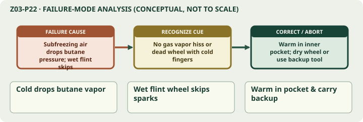

Z03-P22 · Fire and ignition · New manuscript
Manage butane lighter cold-vapor failure and wet striker wheels
Keep disposable or piezo lighters functional in cold or damp weather and diagnose common mechanical failures quickly.
When it applies · Carrying and operating standard butane lighters in cool, wet or winter outdoor conditions.
Equipment · Standard butane lighter stored in an inner pocket, dry spare lighter and waterproof backup matches or ferro rod.

Actions
- Carry a butane lighter in an interior pocket close to body warmth during freezing weather so liquid butane stays warm enough to vaporize when the valve opens.[C11, E10, ED]
- Protect flint-wheel lighters in waterproof bags; if a flint wheel gets wet, dry it thoroughly by rolling it gently without depressing the gas lever before trying to light.[C11, ED]
- Recognize that piezo-electric igniters can misfire at high elevation or in damp air, and never warm a cold lighter near open flame or hot stoves—pressurized fuel canisters can burst.[C11, C15, ED]
Failure recognition · Keeping a plastic butane lighter in an outer pack pocket at 10°F, then repeatedly holding the gas open until fuel freezes or runs empty without lighting.[C11, ED]
Verify · Test the lighter safely outdoors away from flammable vapor before trip departure and verify your independent non-butane backup works.[C11, E02, ED]
Stop or change course · If a lighter leaks gas, cracks or fails to light cleanly after warming in your hand, retire it and switch to stormproof matches, ferro rod or the no-fire plan.[C11, C08, ED]
Evidence and editorial notes
- C08 · NWS · What To Do If You're Caught in a Winter Storm (current web edition)
- Section: Outside > If there is no shelter nearby · Conditions: Stranded outdoors during a winter storm
Support: Seek shelter and block wind and wet exposure. Reduce heat loss from contact with snow or ground.
Limitations: Does not guarantee overnight survival without adequate insulation or rescue. · Conflicting evidence: None; reinforces no-fire exposure control priority.
Editorial note: Anchors no-fire fallback when ignition fails or is banned. · Specialist reviewer: Cold-weather shelter specialist
Primary source · checked 2026-11-24 - C11 · NPS · Ten Essentials (current web edition)
- Section: Fire and illumination · Conditions: Outdoor emergency kit
Support: Carry a dependable ignition option and protect it from moisture. Carry a separate light.
Limitations: Disposable butane lighters lose vapor pressure in freezing cold; matches fail when damp. · Conflicting evidence: None; supports redundant dry ignition kit planning.
Editorial note: Keeps lighting independent of fire-building. · Specialist reviewer: Field equipment and fire prevention
Primary source · checked 2026-11-24 - C15 · NPS · Wildland Fire Safety (current web edition)
- Section: Wildland Fire Safety > Campfires and Stoves · Conditions: Outdoor cooking with portable liquid or canister stoves
Support: Operate stoves on level cleared ground away from tents and dry fuels, cool completely before refueling, and move away from any spilled fuel before lighting.
Limitations: Fuel canisters behave differently in cold weather and high elevation; follow manufacturer limits. · Conflicting evidence: None; aligns with CPSC-C and USFS-FIRE.
Editorial note: Governs stove setup, refueling isolation, and spill failure recognition. · Specialist reviewer: Portable appliance safety and fire prevention
Primary source · checked 2026-11-24 - E02 · NPS · Ten Essentials (current web edition)
- Section: Navigation; insulation; emergency shelter; emergency food and water · Conditions: Outdoor trips; adjust kit to season and route
Support: Carry essential systems including navigation, insulation, light, water and emergency shelter.
Limitations: Carrying items without practice or cold-weather verification does not ensure readiness. · Conflicting evidence: None; baseline kit system architecture.
Editorial note: Supports failure-mode packing and kit verification cards. · Specialist reviewer: Field education and search and rescue
Primary source · checked 2026-11-24 - E10 · NWS · What To Do If You're Caught in a Winter Storm (current web edition)
- Section: Outside > Protect yourself from frostbite and hypothermia · Conditions: Outdoor winter storm
Support: Keep clothing dry and avoid overexertion. Wetness accelerates cooling.
Limitations: Cotton retains moisture and accelerates conductive and evaporative heat loss. · Conflicting evidence: None; reinforces moisture-management layering.
Editorial note: Links sweat management to overnight insulation integrity. · Specialist reviewer: Cold-weather shelter and wilderness medicine
Primary source · checked 2026-11-24
Source lineage · NPS Ten Essentials and cold-weather field safety; new manuscript · Classification · New manuscript.